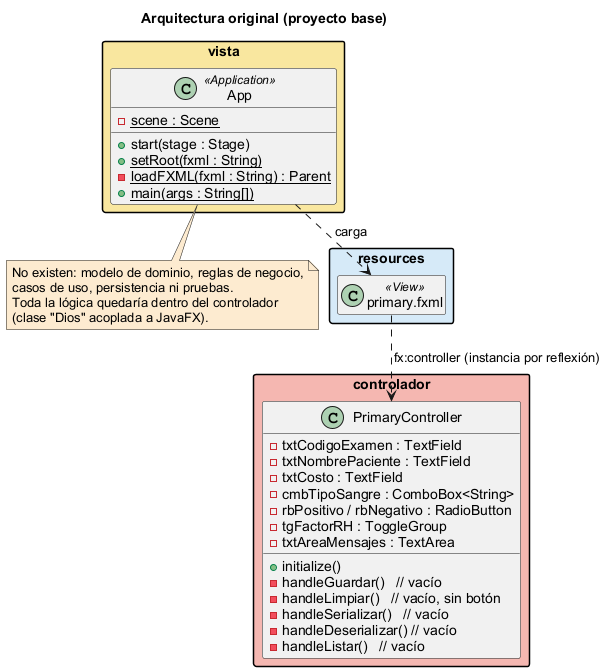

Actividad 1 · Diagnóstico del diseño original
Proyecto base: WolframDev/ParadigmasExamen2 · Aplicación JavaFX “Exámenes de Sangre”
1. Descripción general
El proyecto base es una aplicación de escritorio JavaFX construida con Maven. Su objetivo es registrar exámenes
de sangre de pacientes y permitir listarlos, guardarlos en archivo (serializar) y recuperarlos (deserializar).
El código fuente consta solo de tres artefactos:
| Artefacto | Paquete | Responsabilidad actual |
|---|
App | co.edu.poli.Examen2.vista | Arranca JavaFX, carga primary.fxml y guarda la escena en un campo estático (setRoot global). |
PrimaryController | co.edu.poli.Examen2.controlador | Declara los controles de la vista (@FXML) y cinco manejadores de eventos, todos vacíos. |
primary.fxml | resources | Formulario: código, nombre del paciente, costo, tipo de sangre (A, B, AB, O), factor Rh (+/−); botones Guardar, Listar, Serializar, Deserializar; área de mensajes. |
2. Funcionalidades identificadas
| # | Funcionalidad | Elemento de UI | Estado en el original |
|---|
| F1 | Registrar (guardar) un examen | Botón “Guardar” → handleGuardar() | Sin implementar |
| F2 | Listar los exámenes registrados | Botón “Listar” → handleListar() | Sin implementar |
| F3 | Serializar exámenes a archivo | Botón “Serializar” → handleSerializar() | Sin implementar |
| F4 | Deserializar exámenes desde archivo | Botón “Deserializar” → handleDeserializar() | Sin implementar |
| F5 | Limpiar el formulario | handleLimpiar() | Sin implementar y sin botón en la vista |
| F6 | Mostrar mensajes / resultados | TextArea txtAreaMensajes | Solo declarado |
3. Diagrama de arquitectura actual

Figura 1. Estructura del proyecto original: arquitectura de dos “capas” de presentación (vista y controlador) sin modelo.
La estructura sigue un MVC incompleto: existen la Vista (FXML + App) y el Controlador, pero no hay
Modelo. El único lugar donde podría escribirse la lógica es el controlador, que JavaFX instancia por reflexión
(fx:controller) con un constructor vacío, sin posibilidad de inyectarle dependencias.
4. Problemas de diseño
4.1 Acoplamiento
| Problema | Evidencia | Impacto | Severidad |
|---|
| Lógica de negocio destinada al controlador de UI | Los manejadores handleGuardar, handleSerializar, etc. son el único punto de extensión. | Reglas, persistencia y presentación quedarían mezcladas y dependientes de JavaFX; imposible reutilizarlas o probarlas sin interfaz gráfica. | Alta |
| Controlador creado por reflexión sin inyección | fx:controller en el FXML y FXMLLoader sin controllerFactory. | El controlador tendría que crear con new sus repositorios/servicios (dependencia de clases concretas). | Alta |
| Estado global estático | private static Scene scene y public static setRoot() en App. | Cualquier clase puede cambiar la vista; acoplamiento oculto y difícil de probar. | Media |
| Persistencia sin abstracción | No existe interfaz de almacenamiento. | La serialización con ObjectOutputStream se escribiría directamente en el controlador. | Alta |
4.2 Cohesión
| Problema | Evidencia | Impacto | Severidad |
|---|
| Ausencia de modelo de dominio | No existe la clase Examen; los datos viven solo como texto en controles. | No hay un lugar cohesivo para las reglas (código único, costo positivo, tipo de sangre válido). | Alta |
| Obsesión por primitivos | Tipo de sangre como ComboBox<String>; factor Rh como dos RadioButton; costo como texto. | Valores inválidos posibles; validaciones repetidas y dispersas. | Media |
| Controlador “Dios” potencial | Una sola clase atendería captura, validación, negocio, persistencia y mensajes. | Viola SRP; baja cohesión y alta probabilidad de errores. | Alta |
4.3 Extensibilidad
- Cambiar el formato de persistencia (archivo binario → JSON, base de datos) exigiría modificar el controlador: se viola el principio Abierto/Cerrado.
- Agregar una segunda interfaz (consola, REST) obligaría a duplicar la lógica, pues está atada a JavaFX.
- No existe un mecanismo para notificar resultados a más de un destino (pantalla, bitácora/auditoría).
4.4 Mantenibilidad
| Problema | Evidencia | Severidad |
|---|
| La aplicación no arranca con Maven | pom.xml declara mainClass co.edu.poli.Examen2.App, pero la clase está en co.edu.poli.Examen2.vista.App: mvn javafx:run falla. | Alta |
| Sin pruebas unitarias | No existe src/test ni dependencia de JUnit. | Alta |
| Sin documentación | Sin JavaDoc ni README técnico (solo guía de fork). | Media |
| Funcionalidad huérfana | handleLimpiar() no tiene botón asociado en el FXML. | Baja |
| Dependencias desactualizadas | Java 11 y JavaFX 13 (2019); el FXML declara javafx/21. | Media |
| Artefactos generados versionados | Carpeta target/ y configuración de Eclipse (.settings, .classpath) incluidas. | Baja |
| Convención de nombres | Paquete co.edu.poli.Examen2 con mayúscula (regla Sonar java:S120). | Baja |
5. Conclusión y líneas de mejora
El diseño original es un esqueleto de presentación sin modelo, sin capas y sin abstracciones. Implementar las
funcionalidades sobre él conduciría a un controlador monolítico, acoplado a JavaFX y a la tecnología de persistencia,
imposible de probar de forma aislada. Las mejoras propuestas, desarrolladas en las actividades 2 y 3, son:
- Arquitectura Hexagonal: dominio (
ExamenSangre, TipoSangre, FactorRh) con sus reglas; casos de uso detrás de puertos de entrada; persistencia detrás de puertos de salida; JavaFX, memoria y archivo como adaptadores; raíz de composición que inyecta dependencias.
- Builder (creacional) para construir entidades válidas e inmutables.
- Facade (estructural) para que la UI dependa de un único punto de entrada a la aplicación.
- Observer (comportamiento) para desacoplar los casos de uso de la presentación de mensajes y de la auditoría.
- Pruebas JUnit 5 con cobertura JaCoCo, JavaDoc, análisis SonarQube y corrección del
pom.xml.